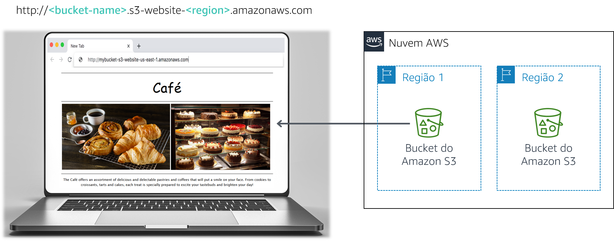

Frank e Martha são casados e proprietários de uma pequena cafeteria que serve doces e café. A filha deles, Sofía, e seu outro funcionário, Nikhil, que é estudante no ensino médio, também trabalham na cafeteria, que tem um único ponto em uma cidade grande.
A cafeteria ainda não tem uma estratégia de marketing. Basicamente, eles atraem novos clientes quando alguém passa em frente, vê a cafeteria e decide entrar. A cafeteria é reconhecida por seus doces e cafés de alta qualidade, mas sua reputação está limitada às pessoas que já visitaram o local ou que ouviram outros clientes falarem dela.
Sofía sugere que Frank e Martha ampliem a visibilidade dos produtos que a cafeteria oferece na vizinhança. A cafeteria ainda não têm presença na Web e não usa nenhum serviço de computação em nuvem. No entanto, isso está prestes a mudar.
Neste laboratório, você usará o Amazon Simple Storage Service (Amazon S3) para criar um site estático e implementar as melhores práticas de arquitetura para proteger e gerenciar seus dados.
Depois de concluir este laboratório, você deverá ser capaz de:

Observação: neste laboratório de desafio, você encontrará algumas tarefas sem instruções passo a passo. Você mesmo deverá descobrir como concluir as tarefas.
Este laboratório levará aproximadamente 60 minutos para ser concluído.
Neste ambiente de laboratório, o acesso aos serviços e ações de serviço da AWS pode estar restrito àqueles necessários para concluir as instruções do laboratório. Você poderá encontrar erros se tentar acessar outros serviços ou executar ações além do que está descrito neste laboratório.
Na parte superior destas instruções, escolha Start Lab (Iniciar laboratório) para iniciar o laboratório.
Um painel Start Lab (Iniciar laboratório) é aberto com o status do laboratório.
Dica: se você precisar de mais tempo para concluir o laboratório, escolha novamente o botão Start Lab (Iniciar laboratório) para reiniciar o cronômetro do ambiente.
Aguarde até que a mensagem Lab status: ready (Status do laboratório: pronto) seja exibida e feche o painel Start Lab (Iniciar laboratório) escolhendo X.
Na parte superior destas instruções, escolha AWS.
O Console de Gerenciamento da AWS será aberto em uma nova guia do navegador. O sistema fará o seu login automaticamente.
Dica: se uma nova guia do navegador não for aberta, normalmente você verá uma faixa ou um ícone na parte superior do navegador com uma mensagem informando que o navegador está impedindo que o site abra janelas pop-up. Escolha a faixa ou o ícone e depois Allow pop ups (Permitir pop-ups).
Organize a guia do Console de Gerenciamento da AWS para que ela seja exibida com essas instruções. O ideal é ver as duas guias do navegador ao mesmo tempo, para facilitar o acompanhamento das etapas do laboratório.
Sofía comenta com Nikhil que ela gostaria que a cafeteria tivesse um site com um mostruário de seus produtos. Esse site também mostraria detalhes do estabelecimento aos clientes, como a localização da loja, o horário de atendimento e o número de telefone.
Nikhil gostou de ter a tarefa de criar o primeiro site da cafeteria.
Para este primeiro desafio, você assumirá o papel de Nikhil e usará o Amazon S3 para criar um site básico para a cafeteria.
Nesta tarefa, você extrairá os arquivos necessários para criar o site estático.
Nesta tarefa, você criará e configurará um bucket do S3 para hospedagem do site estático.
Abra o console do Amazon S3.
Crie um bucket para hospedar o site estático.
Habilite a hospedagem do site estático no bucket.
Nesta tarefa, você fará upload dos arquivos estáticos para o bucket do S3.
As respostas serão gravadas quando você escolher o botão azul Submit (Enviar) acima no fim do laboratório.
Acesse as perguntas deste laboratório.
Na página que você carregou, responda à primeira pergunta:
Observação: deixe a página da Web de perguntas abertas na guia do navegador, pois você a consultará de novo mais adiante neste laboratório.
Frank revela seu plano de criar muitos tipos novos de doces para a cafeteria. Você percebe que precisará fazer upload da imagem de cada sobremesa nova que ele criar e habilitar o acesso público a esse objeto. Você não deseja fazer esse processo manualmente. Em vez disso, decide criar uma política de bucket que automaticamente torne público cada objeto que for carregado por upload para a pasta.
Dica: se você não souber como fazer isso, consulte os exemplos na Documentação da AWS.
Parabéns! Você tem agora um site estático da cafeteria.
Você mostra o novo site para Sofía, e ela fica muito impressionada. Bom trabalho!
Você e Sofía comentam que talvez seja necessário fazer muitas atualizações no site para acompanhar as novas ofertas da cafeteria.
Olivia, arquiteta de soluções da AWS e frequentadora da cafeteria, aconselha você a implementar uma estratégia para evitar a substituição e exclusão acidentais de objetos do site.
Você já precisa fazer algumas alterações no site, portanto decide que este seria um bom momento para explorar o versionamento de objetos.
Nesta tarefa, você habilitará o versionamento no bucket do S3 e confirmará se ele funciona.
Observação: depois que você habilitar o versionamento, não poderá desabilitá-lo.
No editor de texto de sua preferência, abra o arquivo index.html. Por exemplo, você pode usar o Notepad++ ou o TextWrangler.
Modifique o arquivo de acordo com as seguintes instruções:
bgcolor="gainsboro".bgcolor="cornsilk".bgcolor="gainsboro".Faça upload do arquivo atualizado para o bucket do S3.
Recarregue a guia do navegador da Web com seu site e observe as alterações.
Para ver a versão mais recente do arquivo index.html, acesse o bucket e escolha Show (Mostrar). Você deve ver as duas versões do arquivo no menu suspenso.
Retorne à guia do navegador com as perguntas de múltipla escolha deste laboratório e responda à seguinte pergunta:
Melhores práticas de arquitetura
Nesta tarefa, você usou uma técnica para implementar as melhores práticas de arquitetura para proteção dos seus dados.
Agora que habilitou o versionamento, você percebe que o tamanho do bucket do S3 continuará crescendo à medida que faz upload de novos objetos e versões. Para economizar custos, você decide implementar uma estratégia para retirar algumas dessas versões mais antigas.
Nesta tarefa, você definirá uma política de ciclo de vida para mover automaticamente as versões mais antigas dos objetos do bucket de origem para o S3 Standard-Infrequente Access (S3 Standard-IA). A política também deverá expirar os objetos.
Ótimo! Você agora tem uma regra de ciclo de vida que moverá as versões anteriores dos objetos do bucket de origem para o S3 Standard-IA após 30 dias. A política também excluirá permanentemente os objetos do S3 Standard-IA após 365 dias.
Melhores práticas de arquitetura
Nesta tarefa, você implementou as melhores práticas de arquitetura para definir o gerenciamento do ciclo de vida dos dados.
Na próxima visita de Olivia à cafeteria, você conta sobre as atualizações feitas no site. Você descreve as medidas tomadas para proteger os arquivos estáticos do site contra substituição ou exclusão acidental. Olivia fala que a replicação entre regiões é outro recurso do Amazon S3 que você pode usar para fazer backup e arquivar dados críticos.
Nesta tarefa, você habilitará a replicação entre regiões no bucket de origem do S3.
Em uma região diferente do seu bucket de origem, crie um segundo bucket e habilite o versionamento nele. Ele será o bucket de destino.
No bucket de origem do S3, habilite a replicação entre regiões. Ao criar a regra de replicação, certifique-se de:
Version2012-10-17StatementActions3:ListBuckets3:ReplicateObjects3:ReplicateDeletes3:ReplicateTagss3:Get* Resource'*' EffectAllowEssa política de acesso permite que a função execute as tarefas de replicação em todos os buckets do S3. Em um ambiente de produção real, você deve restringir a política para ser aplicada apenas aos buckets de origem e de destino do S3. Para obter mais informações sobre como criar uma função do IAM, consulte Configurar permissões para replicação.
Retorne à guia do navegador com as perguntas de múltipla escolha deste laboratório e responda à seguinte pergunta:
Pergunta 3: Você vê os objetos do bucket de origem no bucket de destino?
Faça uma pequena alteração no arquivo index.html e faça upload da nova versão para o bucket de origem.
Agora confirme se o bucket de origem tem três versões do arquivo index.html.
Confirme se o novo objeto foi replicado para o bucket de destino. Talvez seja necessário recarregar a guia do navegador.
Acesse o bucket de origem e exclua a última versão.
Retorne à guia do navegador com as perguntas de múltipla escolha deste laboratório e responda à seguinte pergunta:
Melhores práticas de arquitetura
Nesta tarefa, você implementou as melhores práticas de arquitetura para automatizar a recuperação de desastres.
Na parte superior destas instruções, escolha Submit (Enviar) para gravar o progresso e, quando solicitado, escolha Yes (Sim).
Se os resultados não forem exibidos após alguns minutos, volte ao topo destas instruções e escolha Grades (Notas).
Dica: você pode enviar seu trabalho várias vezes. Depois de alterar o trabalho, escolha Submit (Enviar) novamente. Seu último envio é o que será gravado para este laboratório.
Para ver o feedback detalhado do seu trabalho, escolha Details (Detalhes) e depois View Submission Report (Visualizar relatório de envio).
Parabéns! Você concluiu o laboratório.
Para confirmar que você deseja encerrar o laboratório, escolha End Lab (Encerrar laboratório) na parte superior desta página e escolha Yes (Sim).
Será exibido um painel com a mensagem: DELETE has been initiated... You may close this message box now. (A EXCLUSÃO foi iniciada... Você pode fechar esta caixa de mensagem agora).
Escolha o X no canto superior direito para fechar o painel.
©2020, Amazon Web Services, Inc. e suas afiliadas. Todos os direitos reservados. Este trabalho não pode ser reproduzido ou redistribuído, no todo ou em parte, sem permissão prévia por escrito da Amazon Web Services, Inc. É proibido copiar, emprestar ou vender para fins comerciais.